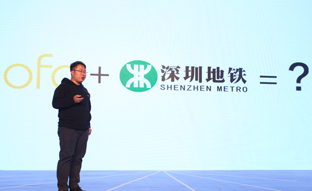
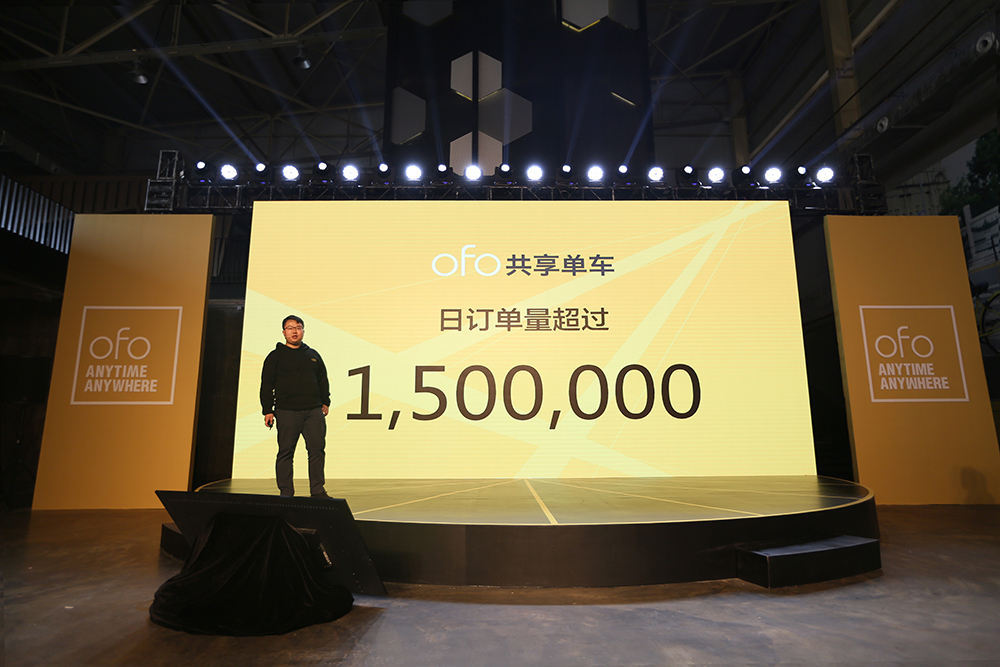
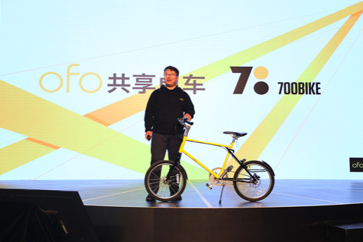

2016/ 12/ 9
ofo将与深圳地铁达成战略合作，在深投放700Bike定制版小黄车，日订单达150万
今天，ofo宣布正式登陆深圳，并将与深圳地铁建立战略合作伙伴关系，双方将在多个层面展开密切合作。
此次合作将利用ofo建设共享单车平台的技术和经验，结合深铁集团地面站点资源优势，在深铁集团地铁站点地面出入口划定共享单车停车专区，供ofo进行车辆投放，为城市居民提供完整的城市公共交通解决方案。在运维层面，ofo还将协助有关部门进行非机动车辆的秩序维护，帮助解决自行车乱停乱放问题。
ofo联合创始人杨品杰介绍，11月17日ofo宣布正式开启城市服务后不到两周内，日订单已超过150万单。ofo已经成为继淘宝、天猫、美团、饿了么、京东、滴滴、易到、口碑后，中国第九家日订单量过百万的互联网平台。
ofo 联合创始人杨品杰表示，百万量级的需求背后，“地铁+ofo共享单车”的出行组合，正逐步成为城市居民的普遍选择，这也是ofo在城市的运营重点。
此前，网上曾曝出ofo与700Bike合作推出的定制版小黄车照片。发布会上，ofo 联合创始人杨品杰确认，ofo定制版小黄车将于近期在深圳投入使用，增加定位功能。深圳也成为ofo运营700Bike定制版小黄车的第一座城市。
除了700bike定制款小黄车，ofo在深圳连接的单车主要为全新升级的ofo 3.0版本。延续了轻便好骑的产品理念与明黄色的设计语言，新一代小黄车使用了实心胎、三角型把立、可调节座椅、前后双抱刹系统等，在安全性、耐用性、功能性、设计感上都获得了提升，同时降低了维护成本。年底前，ofo在深圳将连接6万辆单车。
ofo 将在深圳开展“城市大共享”计划，鼓励居民共享闲置自行车，升级改造、投入使用，调动城市自行车存量。